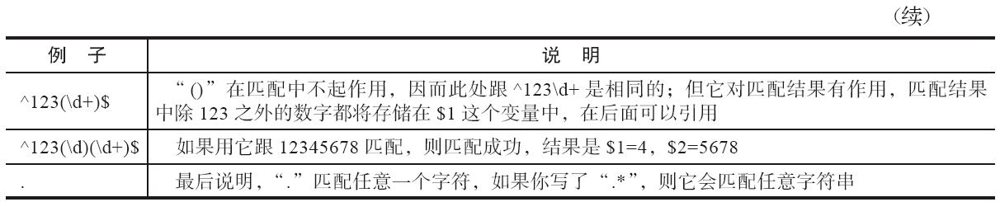
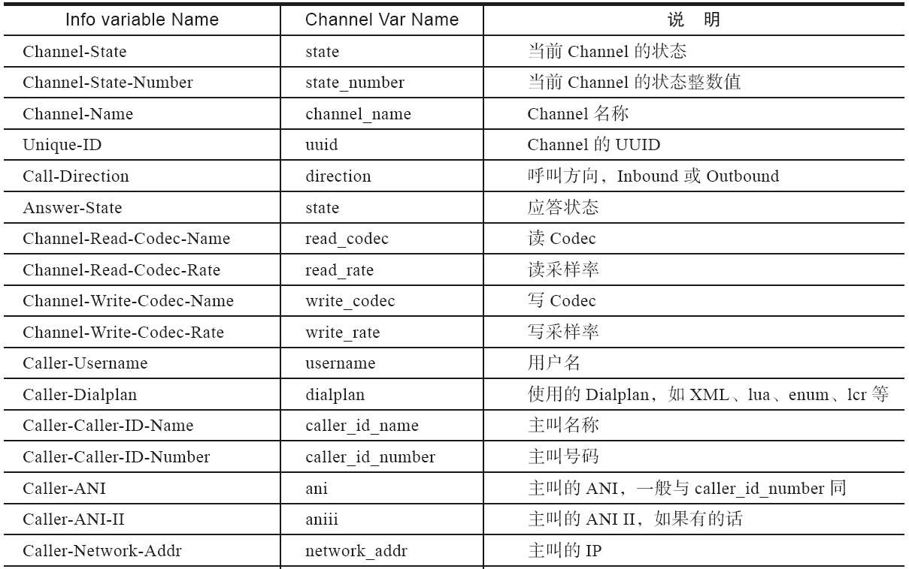
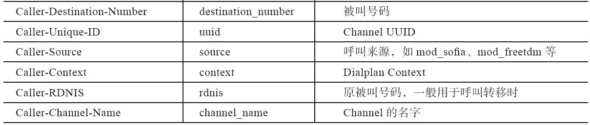
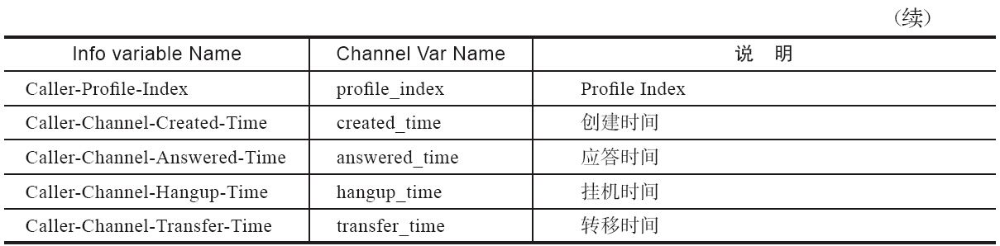
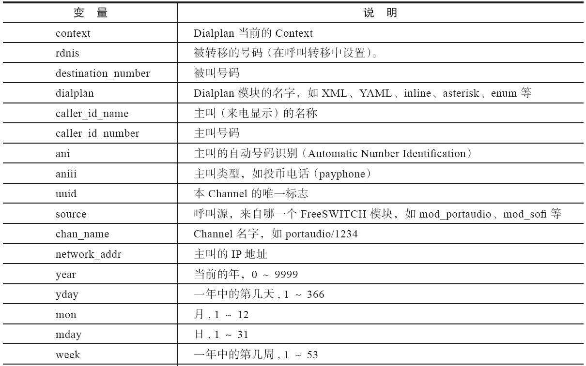
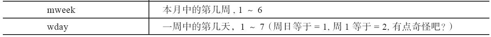
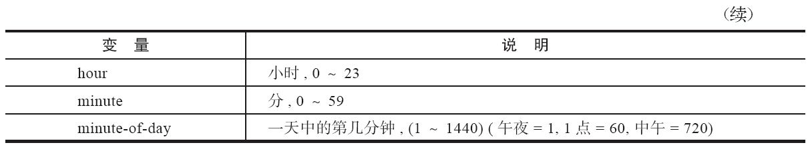

6.1 XML Dialplan
XML Dialplan由一系列的XML配置文件组成，这些XML可以是静态配置的，也可以使用动态配置方式从其他服务器或脚本中动态获取。Dialplan有特定的结构，FreeSWITCH通过解析相关的结构，可对Dialplan进行路由的呼叫，决定执行何种动作或流程。
6.1.1 配置文件的结构
拨号计划的配置文件默认在conf/dialplan目录中，我们在第5章中讲过，它们是在freeswitch.xml中定义的，是由以下预处理指令装入的：
<X-PRE-PROCESS cmd="include" data="dialplan/*.xml"/>
拨号计划由多个Context [1] 组成。每个Context中有多个Extension [2] 。所以Context就是多个Extension的逻辑集合，它相当于一个分组。一个Context中的Extension与其他Context中的Extension在逻辑上是隔离的。
下面是Dialplan的完整结构：
<?xml version="1.0"?>
<document type="freeswitch/xml">
<section name="dialplan" description="Regex/XML Dialplan">
<context name="default">
<extension name="Test Extension">
</extension>
</context>
</section>
</document>
Extension相当于路由表中的表项，其中，每一个Extension都有一个name属性，name可以是任意合法的字符串，本身对呼叫流程没有任何影响。但给它取一个好听的名字，有助于你在查看Log时发现它。
在Extension中可以对一些condition（测试条件）进行判断，如果满足测试条件所指定的表达式，则执行对应的Action（动作）。
例如，我们将下列Extension配置加入到conf/dialplan/default.xml中，并作为第一个Extension：
<extension name="My Echo Test">
<condition field="destination_number" expression="^echo|1234$">
<action application="answer" data=""/>
<action application="echo" data=""/>
</condition>
</extension>
FreeSWITCH安装时，提供了很多例子，为了避免与提供的例子冲突，强烈建议初学者在学习时把自己写的Extension放在最前面 [3] 。当然笔者这里所说的最前面并不是default.xml的第一行，而是紧跟着Context，放到第一个Extension的位置，就是以下语句的后面（你通常能在第13～14行找到它们）：
<include>
<context name="default">
用你喜欢的文本编辑器编辑好并存盘后，在FreeSWITCH控制台上执行reloadxml或按F6键，使FreeSWITCH重新读入你修改过的配置文件。并按F8键（相当于命令console loglevel debug）将Log级别设置为Debug，以显示详细日志。然后注册软电话，并拨叫1234或echo [4] 。接下来你将会在FreeSWITCH控制台上看到很多Log，注意如下的行：
1 Processing Seven <1000>->1234 in context default
2 parsing [default->My Echo Test] continue=false
3 Regex (PASS) [Echo Test] destination_number(1234) =~ /^echo|1234$/ break=on-false
4 Action answer() Action echo()
在笔者的终端上，上面的第1行是以绿色显示的（此处加粗）。当然，为了排版方便，笔者省去了Log中的日期以及其他一些不关键的信息。下面我们对上面的代码进行简单分析：
·第1行，Processing说明是在处理Dialplan，其中Seven是笔者客户端的SIP名字，1000是分机号（即主叫号码），1234是拨叫的号码（被叫号码），这里笔者直接拨叫了1234。它完整意思是说：呼叫已经达到路由阶段，要从XML Dialplan中查找路由，该呼叫来自Seven，分机号是1000，它所呼叫的被叫号码是1234（或echo，如果你拨的是echo的话）。
·第2行，呼叫进入parsing(解析XML)阶段，它首先根据呼叫的来源找到XML中的一个Context，此处是default [5] 。它找到的第一个Extension的name是My Echo Test（还记得吧？我们把它放到了Dialplan的最前面）。continue=false的意义我们稍后再讲。
·第3行，由于该Extension中有一个Condition，它的测试条件是destination_number，也就是被叫号码，所以FreeSWITCH测试被叫号码（这里是1234）是否与配置文件中的正则表达式相匹配。^echo|1234$是正则表达式，它匹配字符串echo或1234。所以这里匹配成功，Log中显示Regex(PASS)。匹配成功后，电话会进入执行阶段（EXECUTE），在Log中会看到如下信息：
(sofia/internal/1000@192.168.7.7) State Change CS_ROUTING -> CS_EXECUTE
第一个要执行的动作是answer，它是一个App，用于对来话进行应答（由于这是一个SIP呼叫，因而底层的信令会给主叫发送200 OK消息），然后执行echo（它也是一个App，在第4章我们讲过，这些App大部分来自于mod_dptools），它的作用就相当于一个回音壁，你说什么都反原封不动地反弹回来，所以你能听到自己的声音。
实际上，在这个例子中，我们呼叫1234时创建了一个单腿的呼叫，与其说我们跟FreeSWITCH在通话，还不如说我们在跟FreeSWITCH中的一个App在通话。而XML Dialplan只是帮助我们找到这个（些）App。
上面所说的是最简单的路由查找，为了简单起见，我们自己写了一个例子。实际上，系统自带的一些Dialplan的例子很有代表性。也许在第3章你已经测试过一些了，但我相信当时你只是测的功能，而没有仔细看Dialplan的查找过程。下面我们一起来试一下系统自带的echo的例子。这次我们呼叫9196（参见表2-1）。在产生的Log中，我们还是从“绿色的行”（Processing）开始看：
1 Processing Seven <1000>->9196 in context default
2 parsing [default->My Echo Test] continue=false
3 Regex (FAIL) [Echo Test] destination_number(9196) =~ /^echo|1234$/ break=on-false
4 parsing [default->unloop] continue=false
5 Regex (PASS) [unloop] ${unroll_loops}(true) =~ /^true$/ break=on-false
6 Regex (FAIL) [unloop] ${sip_looped_call}() =~ /^true$/ break=on-false
7 parsing [default->tod_example] continue=true
此处省略很多行 ......
42 Regex (FAIL) [video_playback] destination_number(9196) =~ /^9194$/ break=on-false
43 parsing [default->delay_echo] continue=false
44 Regex (FAIL) [delay_echo] destination_number(9196) =~ /^9195$/ break=on-false
45 parsing [default->echo] continue=false
46 Regex (PASS) [echo] destination_number(9196) =~ /^9196$/ break=on-false
47 Action answer()
48 Action echo()
由于默认的配置比较长，因而产生的Log比较多。在此，我们先不关注匹配失败的部分（FAIL的行，如第3行和第44行）。可以看到，除第5行外 [6] ，前面的正则表达式匹配大多数都没有成功，只是到最后匹配到^9196$才成功（第46行，注意其中的PASS），成功后先执行answer（应答），然后执行echo（回声）。
在这一节里，我们之所以花了很多篇幅来讲解如此简单的问题，是因为笔者是想让读者明白，这一节最重要的不是讲Dialplan，而是要告诉读者如何看Log。永远记住：遇到Dialplan的问题，按F8键打开详细的Debug级别的日志，尝试打一个电话，并从Log中绿色的行开始看起 [7] 。我们的第一个例子虽然只有短短的四行Log，但是它包含了所有你需要的信息。
6.1.2 默认的配置文件简介
系统默认提供的配置文件包含三个Context，分别是default、features和public。它们分别在三个XML文件中。default是默认的Dialplan，一般来说注册用户都可以通过它来打电话，如拨打其他分机或外部电话等。而public一般用于接收外来呼叫，因为从外部进来的呼叫是不可信的，所以要进行更严格的控制。这个应该很容易理解，比方说：你肯定不想让外部进来的、不可信的电话通过你的网关进行国内或国际长途呼叫，并为这些呼叫买单。
当然，这么说不是绝对的，等你熟悉了Dialplan的概念之后，可以发挥你的想象力进行任意有创意的配置。
在default和public中，又通过include预处理指令分别加入了default和include目录中的所有.xml文件。这些目录中的文件仅包含一些额外的Extension。由于Dialplan在处理的时候是一定的顺序进行的，所以一定要注意这些文件的装入顺序。通常这些文件都是按文件名排序的，如00_、01_等等。如果你想添加新的Extension，可以在这些目录里创建文件。但要注意，这些文件的优先级一般比直接写在default.xml或public、xml中要低（取决于include语句的位置）。前面已经说过，若你还不熟悉系统提供的默认的Dialplan，则有可能因不当操作致使出现与既有的Dialplan相冲突的情况。当然，通过前面的章节我们已经学会如何查看Log，所以即使出现问题也应该能很容易找到问题所在。但在本书中，笔者还是坚持将新加的Extension加在Dialplan中的最前面，以节省篇幅，并便于说明问题。
实际上，由于在处理Dialplan时要对每一项进行正则表达式匹配，这是非常影响效率的。所以在生产环境中，往往要删除这些默认的Dialplan，只保留或添加有用的部分。但是这里我们还不能删，因为里面有很多例子我们还没有好好学习呢。
在深入讲解这些配置文件之前，我们先来看几个基本的概念，然后再在本章后面的部分讲解几个实际的例子。
6.1.3 正则表达式 [8]
Dialplan使用与Perl兼容的正则表达式（Perl-Compatible Regular Expressions，PCRE）匹配算法。熟悉编程的读者肯定已经很熟悉它了，为了方便不熟悉的读者，在这里我们通过几个小例子来简单介绍一下，如表6-1所示。
表6-1 几个正则表达式的例子及说明

FreeSWITCH提供了简单的API可以测试你写的正则表达式是否正确，只需要在命令行上输入“regex要匹配的字符串|正则表达式”即可，如（返回true表示匹配）：
freeswitch> regex 1234 | \d
true
freeswitch> regex 1234 | \d{4}
true
freeswitch> regex 1234 | \d{5}
false
freeswitch> regex 1234 | ^123
true
简单的正则表达式比较容易理解，更深入的学习请查阅相关资料。正则表达式功能很强大，但配置不当也容易出现错误，轻则造成电话不通，重则可能会造成误拨或套拨 [9] ，带来经济损失。
6.1.4 通道变量
在FreeSWITCH中，每一次呼叫都由一条或多条“腿”（Call Leg）组成，其中的一条腿又称为一个Channel（通道），每一个Channel都有很多属性，用于标识Channel的状态、性能等，这些属性称为Channel Variable（通道变量），可简写为Channel Var、Chan Var或Var。
通过使用info这个App，可以查看所有的通道变量。我们先修改一下Dialplan，在default.xml中加入下列Extension：
<extension name="Show Channel Variable">
<condition field="destination_number" expression="^1235|info$">
<action application="info" data=""/>
</condition>
</extension>
为了复习上一节的内容，这一次我们加入到My Echo Test这一Extension的后面，存盘，然后在FreeSWITCH命令行上执行reloadxml。从软电话上呼叫1235或info，可以看到有很多Log输出。还是从绿色的行（Processing）开始看（为节省篇幅，我们删去了后面的一部分日志）：
Processing Seven <1000>->1235 in context default
parsing [default->Echo Test] continue=false
Regex (FAIL) [Echo Test] destination_number(1235) =~ /^echo|1234$/ break=on-false
parsing [default->Show Channel Variable] continue=false
Regex (PASS) [Show Channel Variable] destination_number(1235) =~ /^1235|info$/ break=on-false
Action info()
...
EXECUTE sofia/internal/1000@192.168.7.10 info()
2010-10-23 09:46:31.662281 [INFO] mod_dptools.c:1171 CHANNEL_DATA:
Channel-State: [CS_EXECUTE]
Channel-Call-State: [RINGING]
Channel-Name: [sofia/internal/1000@192.168.7.10]
Unique-ID: [cfea988b-2dc4-42ec-b731-2cd7ea864fc6]
Caller-Direction: [inbound]
Caller-Username: [1000]
Caller-Dialplan: [XML]
Caller-Caller-ID-Name: [Seven]
Caller-Caller-ID-Number: [1000]
Caller-Network-Addr: [192.168.7.10]
Caller-ANI: [1000]
Caller-Destination-Number: [1235]
variable_sip_use_codec_name: [PCMA]
variable_sip_use_codec_rate: [8000]
variable_sip_use_codec_ptime: [20]
variable_read_codec: [PCMA]
variable_read_rate: [8000]
…
可以看到，由于我们呼叫的是1235，它在第三行测试My Echo Test中的1234的时候失败了，测试会继续往下进行。接下来，测试1235的时候成功了，便执行对应的Action——info这个App。它的作用就是把该通道的所有变量都打印到Log中。
所有的通道变量都可以在Dialplan中访问，使用格式是“${变量名}”，如${destination_number}。将下列配置加入Dialplan中（存盘，reloadxml不用再说了吧？）：
<extension name="Accessing Channel Variable">
<condition field="destination_number" expression="^1236(\d+)$">
<action application="log" data="INFO Hahaha, I know you called ${destination_number}"/>
<action application="log" data="INFO The Last few digits is $1"/>
<action application="log" data="ERR This is not actually an error, just jocking :), Have fun!"/>
<action application="hangup"/>
</condition>
</extension>
这次我们呼叫1236789，看看结果：
1 Processing Seven <1000>->1236789 in context default
2 parsing [default->Echo Test] continue=false
3 Regex (FAIL) [Echo Test] destination_number(1236789) =~ /^echo|1234$/ break= on-false
4 parsing [default->Show Channel Variable] continue=false
5 Regex (FAIL) [Show Channel Variable] destination_number(1236789) =~ /^1235$/ break=on-false
6 parsing [default->Accessing Channel Variable] continue=false
7 Regex (PASS) [Accessing Channel Variable] destination_number(1236789) =~ /^1236(\d+)$/ break=on-false
8 Action log(INFO Hahaha, I know you called ${destination_number})
9 Action log(NOTICE The Last few digists is 789)
10 Action log(ERR This is not actually an error, just jocking)
11 Action hangup()
12 [DEBUG] switch_core_state_machine.c:157 13 sofia/internal/1000@192.168.7.10 Standard EXECUTE
14 EXECUTE sofia/internal/1000@192.168.7.10 log(INFO Hahaha, I know you called 1236789)
15 [INFO] mod_dptools.c:1152 Hahaha, I know you called 1236789
EXECUTE sofia/internal/1000@192.168.7.10 log(NOTICE The Last few digits is 789)
16 [NOTICE] mod_dptools.c:1152 The Last few digists is 789
EXECUTE sofia/internal/1000@192.168.7.10 log(ERR This is not actually an error, just jocking :), Have fun!)
17 [ERR] mod_dptools.c:1152 This is not actually an error, just jocking :), Have fun!
18 EXECUTE sofia/internal/1000@192.168.7.10 hangup()
跟前面的例子一样，我们还是从绿色的行开始看。这一次在第7行，1236789匹配了正则表达式^1236(\d+)$，并将789存储在变量$1中。然后在第8~11行解析出的4个Action（3个log，1个hangup）。到此为止，Channel的状态一直没有变，还处在路由解析的阶段。在所有Dialplan解析完成后，Channel状态才进入执行（Standard EXECUTE，第12行）阶段。理解这一点是非常重要的，我们后面会再详细说明，但是在这里要记住路由查找（Routing或Parsing）和执行（Executing）分别属于一路通话的不同阶段。当Channel状态进入执行阶段后，它才开始依次执行所有的Action。log的作用就是将信息写到日志（Log）中，它的第一个参数是loglevel，就是Log的级别，不同的级别在彩色的终端上能以不同的颜色显示，日志的级别有以下几种（其中数越大显示越详细）：
0 - CONSOLE
1 - ALERT
2 - CRIT
3 - ERR
4 - WARNING
5 - NOTICE
6 - INFO
7 - DEBUG
读者应该可以看到彩色的Log了，同时也会看到用$表示的Chan Var被替换成了相应的值。细心的读者还会看到，在这次实验中我们特意增加了几个Action。一个Action通常有两个属性（Attribute）：一个是Application，代表要执行的App；另一个是data，就是App的参数，当App没有参数时，data也可以省略。
一个Action必须是一个合法的XML标签，在前面读者看到的context、extension等都是成对出现的，如<extension></extension>。但由于Action比较简单，一般采用简写的形式来关闭标签，即<action/>。注意大于号前面的“/”，如果不小心漏掉，在reloadxml时将会出现类似“+OK[[error near line 3371]:unexpected closing tag</condition>]”的错误，而实际的错误位置又通常不是出错的那一行。这是在编辑XML文件时经常会遇到的问题，因此较难于查找。因此在修改时要多加小心，并推荐使用具有语法高亮功能的编辑器 [10] 来编辑。
读到这里，读者或许还有疑问：既然我们在info App的输出里没看到destination_number这一变量，那为什么我们可以引用它呢？它到底是从哪里来的？是这样的：它在info中的输出是Caller-Destination-Number，但你在引用的时候就需要使用destination_number。还有一些变量，在info中的输出是variable_xxxx，如variable_domain_name，而实际引用时要去掉“variable_”前缀。不要紧张，这里有一份简明的对照表（见表6-2）。完整的对照表请参见：http://wiki.freeswitch.org/wiki/Channel_Variables#Info_Application_Variable_Names_.28variable_xxxx.29。
表6-2 部分Info中显示的变量与通道变量的对应关系



6.1.5 测试条件
上面我们已经看到了最简单的测试条件，<condition field="destination_number"expression="^1234$">，它使用正则表达式匹配测试一个变量是否满足预设的正则表达式。大部分的测试都是针对被叫号码（destination_number）的，但你也可以对其他变量进行测试，如IP地址（注意由于在正则表达式中“.”具有特殊意义，所有需要用“\”进行转义）就可这样测试：
<condition field="network_addr" expression="^192\.168\.7\.7$">
表6-3列出了大部分的测试条件（Condition）。
表6-3 Dialplan中的测试条件



当然，除此之外，测试还接受用户在用户目录中设置的变量（参见第5章），但要注意必须使用${}对变量进行引用。如下面的toll_allow就是在用户目录中设置的：
<condition field="${toll_allow}" expression="international">
如果在你的用户目录中设置了以下变量，则可以在Dialplan中通过下面的condition一行进行相关测试。
用户目录中的设置：
<user id="1000">
<variables>
<variable name="my_test_var" value="my_test_value"/>
</variables>
</user>
Dialplan中的测试条件：
<condition field="${my_test_var}" expression="^my_test_value$">
一般来说，测试条件不可以嵌套 [11] ，但可以迭加，如下面的例子并不能达到你预期的效果：
<extension name="Testing Stacked Conditions">
<condition field="network_addr" expression="^192\.168\.7\.7$">
<condition field="destination_number" expression="^1234$">
<action application="log" data="INFO Hahaha, I know you called ${destination_number}"/>
</condition>
</condition>
</extension>
但以下配置是正确的：
<extension name="Testing Stacked Conditions">
<condition field="network_addr" expression="^192\.168\.7\.7$"/>
<condition field="destination_number" expression="^1234$">
<action application="log" data="INFO Hahaha, I know you called ${destination_ number}"/>
</condition>
</extension>
注意上述代码中的第一个condition，它的标签是在一行内用简写的形式关闭的，实际上它等价于：
<condition field="network_addr"
expression="^192\.168\.7\.7$"></condition>
所以，它与下面测试destination_number的condition是迭加的关系。因此就构成了一个简单的“逻辑与”的关系，即只有在IP地址和被叫号码两个条件都匹配的情况下才执行此处的Action，否则就跳过本extension，继续解析下一项。因此我们说这两个“平行”的condition是“逻辑与”的关系。
除此之外，两个迭加在一起的condition还可以构成其他关系，使你可以只用XML就能完成比较复杂的路由配置，而无须编程。break参数就是用于实现这个功能的，它有以下几个值（为方便讨论，假设两个条件分别为A和B）：
·on-false。 在第一次匹配失败时停止（但继续处理其他的extension），这是默认的配置。结果相当于A and B。
·on-true。 在第一次匹配成功时停止（但会先完成对应的Action，然后继续处理其他的extension），不成功则继续，所以结果相当于((not A)and B)
·always。 不管是否匹配，都停止。
·never。 不管是否匹配，都继续。
通过使用break参数，你可以写出类似if-then-else的结构。如上面的例子（因为没有break参数，所以默认是on-false）就是（“//”是注释符）：
//
伪代码， =~
表示正则表达式匹配
if(network_addr =~ /^192\.168\.7\.7$/) then
if(destination_number =~ /^1234$/) then
//wirte log
end
end
我们再来看一个例子，假设你呼叫1234，如果来自192.168.7.7这个IP，就播放早上好，如果来自192.168.7.8，就说晚上好，这时你可以这样设置：
<extension name="Testing Stacked Conditions">
<condition field="destination_number" expression="^1234$">
<condition field="network_addr" expression="^192\.168\.7\.7$"/>
<action application="playback" data="good-morning.wav"/>
</condition>
</extension>
<extension name="Testing Stacked Conditions">
<condition field="destination_number" expression="^1234$">
<condition field="network_addr" expression="^192\.168\.7\.8$"/>
<action application="playback" data="good-night.wav"/>
</condition>
</extension>
通过使用break参数，你就可以将两种情况写到一个extension里：
<extension name="Testing Stacked Conditions">
<condition field="destination_number" expression="^1234$"/>
<condition field="network_addr" expression="^192\.168\.7\.7$" break="on-true">
<action application="playback" data="good-morning.wav"/>
</condition>
<condition field="network_addr" expression="^192\.168\.7\.8$">
<action application="playback" data="good-night.wav"/>
</condition>
</extension>
这种情况跟上面两个extension的情况是等价的。虽然看起来不如第一种情况容易理解，但它把相似的功能逻辑上放到一个extension里，却比较直观。如果你从192.168.7.7上呼叫1234，它会首先匹配1234，进而匹配网络地址，匹配成功，便不再往下进行。但是，它会先把已经匹配到的条件中的Action执行完毕，所以播放good-morning.wav。若你从192.168.7.8上呼叫，则它不能匹配192.168.7.7，但由于break参数的值是on-true，所以在这里，它不会中止，而是继续尝试匹配下面的condition，进而播放good-night.wav。所以，它相当于：
if(destination_number =~ /^1234$/) then
if(network_addr =~ /^192\.168\.7\.7$/) then
// play good morning
else if(network_addr =~ /^192.168.7.8$/) then
// play good night
end
end
always和never不常用，发挥你的想象力，可以创造出类似if a then b end或if c then d end之类的条件。
6.1.6 动作与反动作
除使用condition的break机制来完成复杂的条件以外，你还可以使用“反动作”（Anti-Action）来达到类似的目的，如：
<extension name="Anction and Anti-Action">
<condition field="destination_number" expression="^1234$"/>
<condition field="network_addr" expression="^192\.168\.7\.7$">
<action application="playback" data="good-morning.wav"/>
<anti-action application="playback" data="good-night.wav"/>
</condition>
</extension>
上述代码它说明，如果呼叫来自192.168.7.7，则播放good-morning.wav，否则播放good-night.wav（不管是不是来自192.169.7.8）。因此，读者可以看到，它没有condition条件那么强大，但在简单的条件下也经常使用，它相当于：
if(destination_number =~ /^1234$/) then
if(network_addr =~ /^192\.168\.7\.7$/) then
// play good morning
else
// play good night
end
end
6.1.7 工作机制深入剖析
在进一步了解Dialplan的工作机制之前，我们先来看一下Channel的状态机，如图6-1所示。
图6-1 Channel状态机
当新建（NEW）一个Channel时，它首先会进行初始化（INIT），然后进入路由（ROUTING）阶段，也就是我们查找解析Dialplan的阶段。在这里，要注意一个专门的术语——Hunting（在传统的交换机里，它译为选线，在这里我就译为选路吧）。找到合适的路由入口后，Hunting会执行（EXECUTE）一系列动作，最后无论哪一方挂机，都会进入挂机（HANGUP）阶段。后面的报告（REPORTING）阶段一般用于进行统计、计费等，最后将Channel销毁（DESTROY），释放系统资源。
在EXECUTE状态，可能会发生转移（Transfer，该转移跟我们通常说的呼叫转移不太一样），它可以转移到同一context下其他的extension，或者转移到其他context下的extension，但无论发生哪种转移，都会重新进行路由，也就是重新进入ROUTING阶段（图6-1中虚线部分），重新Hunt Dialplan。
我们在前面的章节也讲过，一定要记住ROUTING和EXECUTE是属于两个不同阶段的，只有ROUTING完毕后才会进行EXECUTE阶段的操作。当一个Channel进入ROUTING阶段时，它首先会到达Dialplan（英文叫Hit the Dialplan），然后对预设的Dialplan进行解析（是的，每个电话都会重新解析Dialplan），解析Dialplan的这一过程称为Parsing或Hunting。解析完毕（成功）后，会得到一些Action，然后Channel进入EXECUTE阶段，依次执行所有的Action。
作为一个例子，我们用另一种方式实现类似上面的good-morning/good-night中的例子，但这一次稍有不同：用户呼叫1234，如果来自192.168.7.7，则播放good-morning.wav；如果来自192.168.7.8，则播放good-night.wav；否则，什么都不做。（注意：这个例子是错误的，它不会达到你预期的结果， 但这是新手常常犯的错误，而遇到这种情况，大多数新手都会以为FreeSWITCH出问题了）：
<extension name="Testing Hunting and Executing" continue="true">
<condition>
<action application="set" data="greeting=no-greeting.wav"/>
</condition>
</extension>
<extension name="Testing Hunting and Executing" continue="true">
<condition field="network_addr" expression="^192\.168\.7\.7$">
<action application="set" data="greeting=good-morning.wav"/>
</condition>
</extension>
<extension name="Testing Hunting and Executing" continue="true">
<condition field="network_addr" expression="^192\.168\.7\.8$">
<action application="set" data="greeting=good-night.wav"/>
</condition>
</extension>
<extension name="Testing Hunting and Executing">
<condition field="destination_number" expression="^1234$"/>
<condition field="${greeting}" expression="^good">
<action application="playback" data="${greeting}"/>
</condition>
</extension>
首先，也许你已经看到，我们在前三个extension中都增加了一个参数continue="true"。如果没有该参数，则默认为false。在默认的情况下（试想一下前面的例子），在Dialplan的Hunting阶段，一旦根据前面介绍的condition匹配规则找到对应的extension，就执行相应的Action，而不会再继续查找其他的extension了，不管后面的extension是否有可能匹配。
但有些情况下，Dialplan中会有多个extension满足匹配规则，而我们希望所有对应的Action都能得到执行，这时我们就要使用continue="true"参数了。
此外，我们这次还在第一个extension中用了一个空的condition，这个空的condition没有匹配规则，因此它被认为匹配所有规则，故称其为绝对条件（Absolute Condition）。所以从表面上看，它等价于：
$greeting = no-greeting.wav
if (network_addr =~ /^192\.168\.7\.7$/) then
$greeting = good-morning.wav
else if (network_addr =~ /192\.168\.7\.8$/) then
$greeting = good-night.wav
end
if (destination_number =~ /^1234$/ and $greeting =~ /^good/) then
play $greeting
end
但实际上两者不是等价的。原因在于，对Dialplan的Hunting和Executing分属于不同的阶段。在Hunting阶段，只解析Dialplan，并不执行任何动作，而是将所有满足条件的Action都放到一个动作列表（队列）中，待呼叫流程进行到Executing阶段时，再依次执行动作列表中的动作。所以上述的XML实际上等价于：
$action_list[0] = "$greeting = no-greeting.wav"
if (network_addr =~ /^192\.168\.7\.7$/) then
$action_list[1] = "$greeting = good-morning.wav"
else if (network_addr =~ /^192\.168\.7\.8$/) then
$action_list[1] = "$greeting = good-night.wav"
end
if (destination_number =~ /^1234$/ and $greeting =~ /^good/) then
$action_list[2] = "play $greeting"
end
//
开始执行命令列表中的命令
foreach $action in $action_list do
execute $action
end
到了这里你应该找出问题所在了。因为你已经看到，在Hunting阶段，greeting这个变量始终是空值，因为没有任何动作设置这个值。所以在测试greeting与正则表达式/^good/是否匹配时，永远是不通过的。因此最后的动作列表中，也只有两个动作action_list[0]和action_list[1]。虽然在执行阶段$greeting的值最终会被设置为no-greeting、good-morning或good-night，但它再也不会回到Hunting阶段了（使用transfer除外），因而也不可能有机会通过/^good/测试条件进而再执行真正的playback动作以播放声音。
关于XML Dialplan就介绍到这里。因为它本身就比较复杂，所以可能有些读者读到这里依然不是很明白，但是限于篇幅我们也只能介绍到这种程度。读者可反复阅读本节，理清前后关系，若依然不明白，笔者建议大家这样做：把这些XML放到你的机器上，观察Log的输出，并改一下某些参数对比一下Log有什么不同（如把true改成false，把IP换成你自己的IP地址等）。
笔者在这里写了一个错误的例子，故有责任把它改正，请看下一节。
6.1.8 内联执行
在6.1.7节我们讲了一个错误的例子。原因是在Dialplan的Hunting阶段不执行Action，但你却认为它应该执行。当然，如果你学会了看Log，完全可以从Log中看出这一问题。但实际上，大多数的新手都不会仔细地去看Log，而且即使仔细看了，由于经验比较少，也不一定能找到问题所在。FreeSWITCH的开发者和老手们为了解决这个问题，便在Action上增加了一个inline 属性。
好了，现在我们就把所有带set的Action都加上inline="true"这一属性，问题就迎刃而解了，如：
<action inline="true" application="set" data="greeting=no-greeting.wav"/>
是的，上述就是你期望的结果。在Hunting阶段，如果发现带有inline的Action，FreeSWITCH便会直接执行它，而不用等到EXECUT阶段。
改好后，认真对比一下Log输出与前面有什么不同。相信到这里你基本上完全理解Dialplan了。
当然，并不是所有的App都能用inline执行。以inline方式执行的App实际上相当于不遵守正常的执行流程，因而使用起来会有一些限制——适合inline执行的App必须能很快地执行，一般只是很快地存取某个变量，并且不能改变当前Channel的状态。满足这样条件的App有：check_acl、eval、event、export、enum、log、presence、set、set_global、lcr、set_profile_var、set_user、sleep、unset、nibblebill、verbose_events、cidlookup、curl、easyroute、odbc_query。
当然，inline参数也不是解决所有问题的万能钥匙，由于它会打乱执行顺序，所以使用不当也可能会产生非预期的结果。考虑下面的例子：
<action inline="true" application="set" data="var=1"/>
<action application="info"/>
<action inline="true" application="set" data="var=2"/>
<action application="info"/>
乍一看，第一个info输出结果中应该有variable_var=1，第二个info输出结果中variable_var=2。而实际上，在最后的输出中，两个info的输出结果都会显示variable_var=2。想一想，为什么 [12] ？
6.1.9 实例解析
以上的论述应该涵盖了Dialplan的大部分概念，当然，要活学活用，还需要一些经验。下面，我们讲几个真实的例子，来帮助读者加深一下印象。这些例子大部分来自默认的配置文件。
1.Local_Extension
我们要看的第一个例子是Local_Extension。FreeSWITCH默认的配置提供了1000～1019共20个SIP账号，密码都是1234。FreeSWITCH通过以下Dialplan可以将来话路由到这些本地的号码。conf/dialplan/default.xml中的Local_Extension部分如下：
<extension name="Local_Extension">
<condition field="destination_number" expression="^(10[01][0-9])$">
<!-- many actions
，此处暂时省略 -->
</condition>
</extension>
这个框架说明，用正则表达式(10[01][0-9])$来匹配被叫号码，它匹配所有1000～1019这20个号码。
这里我们假设在SIP客户端上，用1000和1001分别注册到了FreeSWITCH上，则1000呼叫1001时，FreeSWITCH会建立一个Channel，该Channel构成一次呼叫的a-leg（a腿）。初始化完毕后，Channel进入ROUTING状态，即到达Dialplan。由于被叫号码1001与这里的正则表达式匹配，所以接下来会执行下面这些Action。另外，由于我们在正则表达式中使用了“()”，因此匹配结果会放入变量$1中，因此在这里$1=1001。
下面我们再依次来看一下刚才我们省略的“many actions”里面的内容，先从以下两行开始看：
<action application="set" data="dialed_extension=$1"/>
<action application="export" data="dialed_extension=$1"/>
其中，set和export都是设置一个变量，该变量的名字是dialed_extension，值是1001。
关于set和export的区别我们在第5章已经讲过了。这里再重复一次：set是将变量设置到当前的Channel上，即a-leg。而export则除具备set的功能外，也将变量设置到b-leg上。当然，这时b-leg还不存在。所以在这里它对该Channel的影响与set其实是一样的。因此，使用set完全是多余的。但是除此之外，export还设置了一个特殊的变量，叫export_vars，它的值是dialed_extension。所以，实际上面的第二行就等价于下面的两行：
<action application="set" data="dialed_extension=$1"/>
<action application="set" data="export_vars=dialed_extension"/>
接着往下看：
<!-- bind_meta_app can have these args <key> [a|b|ab] [a|b|o|s] <app> -->
<action application="bind_meta_app" data="1 b s execute_extension::dx
XML features"/>
<action application="bind_meta_app" data="2 b s
record_session::$${recordings_dir}/${caller_id_number}.${strftime(%Y-%m-%d-%H-%M-%S)}.wav"/>
<action application="bind_meta_app" data="3 b s execute_extension::cf
XML features"/>
<action application="bind_meta_app" data="4 b s
execute_extension::att_xfer XML features"/>
其中，bind_meta_app的作用是在该Channel上绑定DTMF。上面四行分别绑定了1、2、3、4四个按键，它们都绑定到了b-leg上。注意，这时候b-leg还不存在。所以请记住这里，后面我们再讲。继续往下看：
<action application="set" data="ringback=${us-ring}"/>
此处，设置回铃音是美音（不同国家的回铃音是有区别的），${us-ring}的值是在vars.xml中设置的。接下来：
<action application="set" data="transfer_ringback=$${hold_music}"/>
以上是设置如果发生呼叫转移时，用户听到的回铃音 [13] 。
下面这些变量会影响呼叫流程，关于它们的详细说明参见下文的bridge部分。
<action application="set" data="call_timeout=30"/>
call_timeout是设置呼叫超时的变量。
<action application="set" data="hangup_after_bridge=true"/>
<!--<action application="set"
data="continue_on_fail=NORMAL_TEMPORARY_FAILURE,USER_BUSY,NO_ANSWER,TIMEOUT, NO_ROUTE_DESTINATION"/> -->
<action application="set" data="continue_on_fail=true"/>
继续往下看：
<action application="hash"
data="insert/${domain_name}-
call_return/${dialed_extension}/${caller_id_number}"/>
<action application="hash"
data="insert/${domain_name}-
last_dial_ext/${dialed_extension}/${uuid}"/>
<action application="hash"
data="insert/${domain_name}-last_
dial_ext/${called_party_callgroup}/${uuid}"/>
<action application="hash"
data="insert/${domain_name}-last_dial_ext/global/${uuid}"/>
hash是内存中的哈希表数据结构。它可以设置一个键-值对（Key-Value Pair）。如上面最后一行向${domain_name}-last_dial_ext这个哈希表中插入一个global键，它的值是${uuid}，即本Channel的唯一标志 [14] 。
不管是上面的set，还是hash，都是保存一些数据为后面做准备的。不同的是set将变量存绑定到Channel上，以通道变量的形式存在，而hash保存到内存的哈希表数据结构中。
继续往下看，还是设置通道变量：
<action application="set"
data="called_party_callgroup=${user_data(${dialed_extension}@${domain_name} var callgroup)}"/>
<!--<action application="export"
data="nolocal:sip_secure_media=${user_data(${dialed_extension}@${domain_name} var sip_secure_media)}"/>-->
上面最后一行默认是注释掉的，因此不起作用。nolocal的作用我们之前也讲过，它告诉export只将该变量设置到b-leg上，而不要设置到a-leg上。
下面，还是往哈希表中插入数据：
<action application="hash"
data="insert/${domain_name}-
last_dial/${called_party_callgroup}/${uuid}"/>
再往下看，终于到了一个干实事的地方了：
<action application="bridge"
data="{sip_invite_domain=$${domain}}user/${dialed_extension}@${domain_name}"/>
这里，bridge是最关键的部分。其实上面除bridge以外的Action都可以省略，只是会少一些功能而已（如同组代答、监听等）。
bridge相当于一座桥，它的作用就是把两条腿1000和1001给桥接起来。在这里，为了能连接到1001，FreeSWITCH作为一个SIP UAC [15] ，向1001这个SIP UA（UAS）发起一个INVITE请求，并建立一个新Channel，就是我们的b-leg。1001开始振铃，bridge把回铃音传回到1000，因此1000就能听到回铃音（如果1001有自己的回铃音，则1000也能听到，否则将会听到默认的回铃音${us-ring}）。
当然，实际的情况比我们所说的要复杂，因为在呼叫之前，FreeSWITCH首先要查找1001这个用户是否已经注册，否则，会直接返回USER_NOT_REGISTERED，而不会建立b-leg。
bridge的参数是一个标准的呼叫字符串（Dial string），以前我们也讲过。domain和domain_name都是预设的变量，默认就是服务器的IP地址。user是一个特殊的Endpoint，它指本地用户。所以这里的呼叫字符串翻译出来就是（这里假设IP是192.168.7.2）：
{sip_invite_domain=192.168.7.2}user/1001@192.168.7.2
其中，“{}”里是设置通道变量。由于bridge在这里要建立b-leg，因此这些变量只会建立在b-leg上。这与set是不一样的，但它等价于下面的export：
<action application="export" value="nolocal:sip_invite_domain=192.168.7.2"/>
<action application="bridge" value="user/1001@192.168.7.2"/>
好了，到此为止电话路由基本上就完成了，我们已经建立了1000到1001之间的呼叫，1001已经开始振铃，就等着有人来接电话了。接下来可能会有以下几种情况：
·被叫应答
·被叫忙
·被叫无应答
·被叫拒绝
·其他情况……
我们先来看一下被叫应答的情况。1001接电话，与1000畅聊。在这个时候bridge一直是阻塞的，也就是说，bridge这个App会一直等待b-leg（1001）挂机（或者其他错误）后才返回，这时才有可能继续执行下面的Action。好吧，让我们先休息一下，等他们两个聊完吧。
最后，无论哪一方挂机，bridge就算结束了。如果1000（主叫）先挂机，则FreeSWITCH会将挂机原因（Hangup Cause，一般是NORMAL_RELEASE，即正常释放）发送给1001，同时释放b-leg。由于a-leg已经没了，Dialplan就再也没有往下执行的必要，因此会产生计费信息，并销毁a-leg。
如果1001先挂机，b-leg就这样消失了。但a-leg依然存在，所以还有戏看。
b-leg会将挂机原因传到a-leg。在a-leg决定是否继续往下执行之前，会检查一些变量，以决定该怎么做。其中，我们在前面设置了hangup_after_bridge=true。它的意思是，如果bridge正常完成后，就挂机。因此，a-leg到这里就释放了，它的挂机原因是参考b-leg得出的。
但由于种种原因1001可能没接电话，如1001可能会拒接（返回CAlL_REJECTED，但某些SIP UA会在用户拒接时返回USER_BUSY，隐藏真实原因）、忙（USER_BUSY）、无应答（NO_ANSWER或NO_USER_RESPONSE）等。出现这些情况时，FreeSWITCH认为这是不成功的bridge，因此就不管用hangup_after_bridge变量了（由于没有成功的bridge，也就也没有“after”一说了）。这时候它会检查另一个变量continue_on_fail。由于我们上面设置的continue_on_fail=true，因此在bridge失败后会继续（continue）执行下面的Action。
这里值得说明的是，通过给continue_on_fail不同的值，可以决定在什么情况下继续，如下面的设置将只在用户忙和无应答的情况下才会继续呼叫流程：
<action application="set"
data="continue_on_fail=USER_BUSY,NO_ANSWER"/>
其他可能的值有：NORMAL_TEMPORARY_FAILURE（临时故障）、TIMEOUT（超时，一般是SIP超时）、NO_ROUTE_DESTINATION（呼叫不可达）等。
当然，此处的continue_on_fail=true表示无论什么原因导致bridge失败（我们没法联系上1001），我们都决定继续执行。言归正传，我们接着往下看：
<action application="answer"/>
Dialplan执行到这里，answer App首先会使FreeSWITCH给主叫1000回送应答消息，以建立真正的媒体流，准备对其播放声音。接下来：
<action application="sleep" data="1000"/>
<action application="voicemail" data="default ${domain_name}
${dialed_extension}"/>
sleep表示暂停，1000表示暂停的毫秒数（即1秒），然后转到1001的语音信箱 [16] 。另外，值得注意的是，FreeSWITCH默认配置文件中是通过transfer加loopback Endpoint的方式转到voicemail的，我们还没有学到loopback，因为这里我们学到的新东西已经够多了，所以为了方便说明，笔者直接改成了voicemail App的形式，它们在这里的作用是等价的。
2.回声和延迟回声
关于回声，没什么需要多解释的，我们已经非常熟悉这一段了。如果拨9196，就能听到自己的回声。Dialplan如下：
<extension name="echo">
<condition field="destination_number" expression="^9196$">
<action application="answer"/>
<action application="echo"/>
</condition>
</extension>
与echo类似，delay_echo可以使用回声有一定延迟，Dialplan如下（其中5000是毫秒数）：
<extension name="delay_echo">
<condition field="destination_number" expression="^9195$">
<action application="answer"/>
<action application="delay_echo" data="5000"/>
</condition>
</extension>
3.会议
下面的Dialplan可以将来话转入一个会议。其中，nb_conference的意思是Narrow Band Conference，就是默认的8000Hz的窄带电话会议。
<extension name="nb_conferences">
<condition field="destination_number" expression="^(30\d{2})$">
<action application="answer" data=""/>
<action application="conference" data="$1-
${domain_name}@default"/>
</condition>
</extension>
上面的正则表达式“^(30)$”匹配以30开头的4位数字的被叫号码。一般测试时都可以直接呼叫3000或3001。所有呼叫30xx（30+两位数字）的电话均可以进入一个会议（conference），大家可以畅所欲言。其中，conference是一个App，它的参数扩展开就是（假设呼叫3000，IP地址是192.168.7.2）：
3000-192.168.7.2@default
其中，3000-IP地址是会议的名字，@后面的default表示一个会议的profile，它定义了这个会议的相关参数。我们在后面还会专门讲到多人电话会议，在这里，读者只需要知道呼叫3000能进入一个会议就可以了。
4.将通话的双方转入会议
我们再回头看看6.1.9节中的bind_meta_app 3这一行：
<action application="bind_meta_app" data="3 b s execute_extension::cf XML features"/>
bind_meta_app是一个App，它有一系列参数，其中，3表示绑定DTMF按键3；b表示要绑到b-leg上；s表示Same。即如果在b-leg上按下“*3”（必须先按“*”），则执行execute_extension这个App。execute_extension是临时去别的地方执行一些Dialplan指定的App，在这里它的参数是cf XML features，表示要去XML Dialplan的features这个Context中找一个匹配cf的extension。
假设1000呼叫1001，则1001摘机后可以与1000通话。这时，由于1001是b-leg，因而它可以通过按“*3”这个DTMF按键触发execute_extension动作，我们接下来看会发生什么。
features这个Context在conf/dialplan/features.xml中定义，我们可以很容易找到匹配cf的这个extension：
<!-- Used to transfer both legs into a conference -->
<extension name="cf">
<condition field="destination_number" expression="^cf$">
<action application="answer"/>
<action application="transfer" data="-both
30${dialed_extension:2} XML default"/>
</condition>
</extension>
首先，answer这个App在这里没什么用，因为呼叫已经应答了。transfer是一个App，它会将当前通话重新转移到ROUTING阶段，重新去Dialplan中进行路由。这里它的第一个参数是-both，表示要将它自己和a-leg都转到Dialplan中重新路由。路由的Dialplan类型仍然是XML，Context是Default，被叫号码30${dialed_extension:2}中的dialed_extension变量来自于6.1.9节中的：
<action application="export" data="dialed_extension=$1"/>
注意，上面是用export把变量设置到b-leg上的，实际上就是最初的被叫号码1001，${dialed_extension:2}的意思是从1001的第2个位置开始截取，一直截取到字符串结尾的字符串，由于位置是从0开始计数的，因而1001:2最终的结果就是01，因而最终transfer的一行就等价于：
<action application="transfer" data="-both 3001 XML default"/>
其中，-both表示将两条腿都分别转到3001这个extension上。所以，重新路由后就到了会议的情况。最终1000和1001都进入名为3001-192.168.7.2的会议。
[1] 可以直译为上下文、环境、呼叫源等，但都感觉词不达意，因此在本书中我们直接称为Context。如果把整个Dialplan看作一张路由表的话，Context就相当于路由表项中不同的逻辑分组或部分。另外，这里的Context以及下文讲的Extension、Action等名词，虽然有的可以翻译成中文，但都不能准确的反映原文的意思。因此，我们这里以专有名词对待，统一使用英文，并以首字母大写形式呈现。而在实际的配置文件中，则按惯例以小写表示。
[2] 分支，在简单的PBX中也可以认为是分机号，但很显然，Extension涵盖的内容远比分机号多。
[3] 如果你不是初学者，则不建议放到最前面，至少要放到unloop那个Extension后面。
[4] 大部分软电话都能呼叫字母，如Zoiper，XLite可以使用空格键在数字和字母间切换。能以字母作为被叫号码也是软电话与传统硬电话最大的不同。
[5] 它是在用户目录中定义的，参见第5章。用户目录配置文件中有一项<variable name="user_context"value="default"/>，说明，如果1000这个用户发起呼叫，则它的context就是default，所以，待呼叫进行到路由阶段后，要从XML Dialplan中的default这个Context查起。
[6] 第5行是一个组合的Condition，虽然第一个Condition被PASS了，但第二个FAIL了，因此总的来说还是FAIL。关于Condition的详细介绍，见6.1.5节。
[7] 当然，这里所说的绿色的行纯属巧合，实际上应该是解析Diaplan的那一行，即从“Processing...”这一行开始看，它是INFO级别的日志，在一大堆黄色的行中比较显眼。当然，如果你的终端不支持彩色，那就需要多费一下眼睛了。
[8] 参考资料：http://zh.wikipedia.org/zh/正则表达式和http://wiki.freeswitch.org/wiki/Regular_Expression。
[9] 所谓套拨，就是利用拨号规则的漏洞拨打非常规的号码来达到拨打受限号码和节省话费的目的。一般来说，拨打不同号码的资费是不一样的，如200是不计费的，在号码前加17951打长途比直接拨打要便宜。如果Dialplan设置不当，可能会造成没有17951权限的用户拨打20017951139xxxxxxxx却能打通，这样系统轻则会自动去掉200，允许该用户拨打17951；重则可能直接不计费，这种拨号方式就是套拨。防止这种套拨一般可以通过限制所能输入的号码的最大长度来实现。
[10] 借助语法高亮通常能很快发现错误。这些编辑器包括Windows平台上的Notepad++、UNIX类平台上的Vim或Emacs等，笔者常用的是Sublime Text 2，它是跨平台的。
[11] FreeSWITCH于2012年底加入了嵌套Dialplan的支持（http://jira.freeswitch.org/browse/FS-4935）。这使得它的功能更加强大，但如其作者所说，这对于写文档的人或写书的人而言就不是个好消息了（bad news for documenters and authors）。限于本书的篇幅，在这里就不多介绍了。读者只要理解了本章的内容，如果需要这么复杂条件的读者请自行参阅http://wiki.freeswitch.org/wiki/FreeSwitch_Dialplan_XML上的Nested_Conditions部分。
[12] 因为set是以inline方式执行的，而info要等到EXECUTE阶段才被执行，所以实际执行的顺序是set→set→info→info，很显然，执行到info时变量的值已经是2了。
[13] 它跟ringback的区别是，ringback是真正的回铃音，是在电话answer之前放的；而如果电话已经被接听（如到了IVR），那么再发生转移时，就放transfer_ringback指定的声音。
[14] 每一个Channel都有一个唯一标志，称为Channel UUID。该变量在全局代答（又叫代接，见2.2节）业务中会用到，使用时，其他分机可以通过拨打一个号码查找到这个键值，进而可以“代接”。
[15] 我们会在第7章讲到这些UA的概念。用户1000其实是一个SIP UA（UAC），它向FreeSWITCH（作为UAS）发送一个INVITE请求。然后FreeSWITCH建立一个Channel，从INVITE请求中找到被叫号码（destination_number=1001），然后在Dialplan中查找1001。
[16] 语音信箱即Voicemail，在国内用得不多，因此在本书中我们不讨论这部分内容。